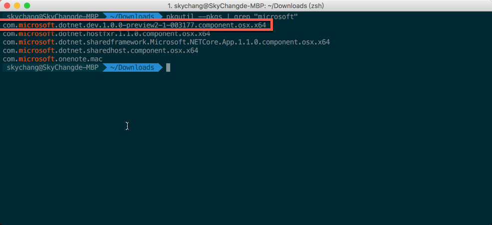
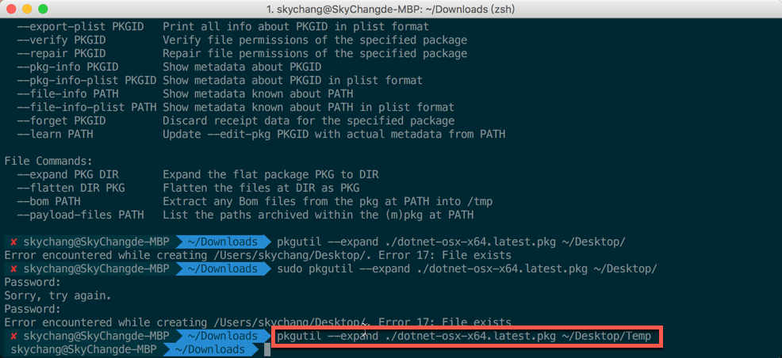
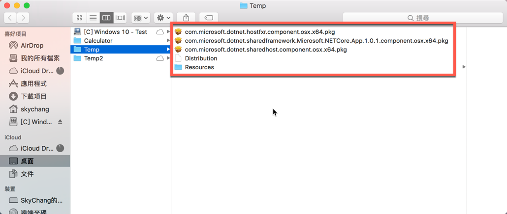
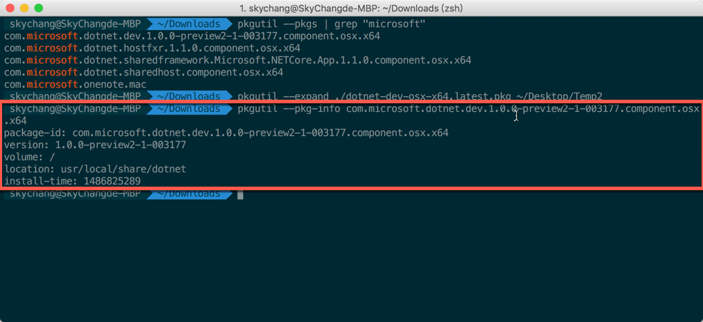
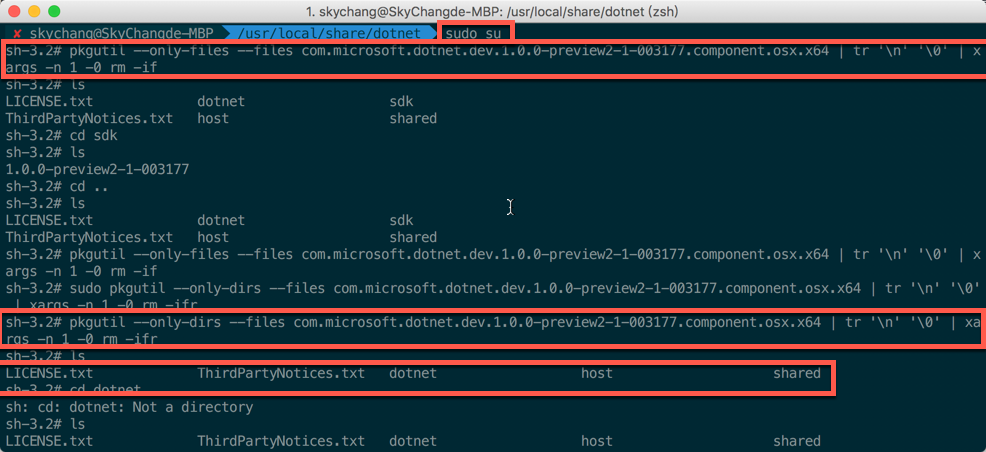
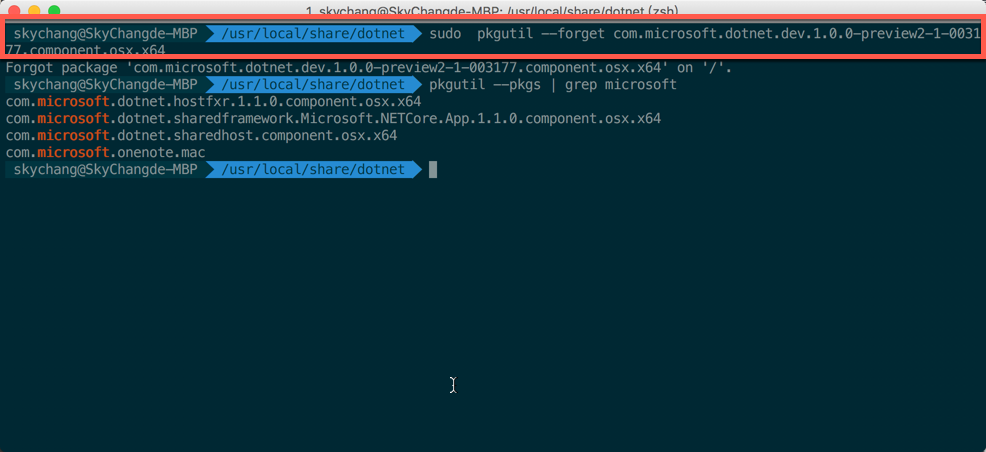

前言
在 macOS 上裝 pkg 雖然很方便，按一按就結束了，但當要反安裝的時候，就真的感受到 Windows 下 msi 的好處了….
而這篇，主要會敘述，在 macOS 下，假設已經安裝了 dotnet-dev-osx-x64.1.0.0-preview2-1-003177 這個 pkg 最後，我們該怎樣移除。
備註 ：
為什麼要移除呢？
那是因為目前的 .NET Core CLI 工具，已經進入 RC 4 了，而官網提供的 pkg 有點太舊，
現在 CLI RC 4 的版本 ( 其實 CLI RC 3 開始 )，已經陸續的將 project.json 轉移到 .csproj 底下了。
所以原本的 Previre2 的版本，小弟就覺得礙事，就研究了一下移除的方法….
( 重點是，官網既然找不到 = = …. 還好國內國外都有很多高手已經嘗試過了…. )
pkg 裡面有啥東西
在開始之前，我們可以先使用底下指令，來列出所有關於 microsoft 的 pkg 套件
1 | pkgutil --pkgs | grep microsoft |
如下圖，我們的目標就是紅色的那個套件，但，我們怎麼能確定，其他的 pkg 是和 dev.1.0.0-preview2 無關呢？

所以，這邊我們使用另外一個指令，用這個指令可以解開 pkg 包，並解開到桌面的 Temp 底下。
( 當然，要先下載原先的 pkg 包來解開，下圖小弟是直接下載最後版本的 .NET Runtime pkg 來檢驗 )
1 | pkgutil --expand ./dotnet-osx-x64.latest.pkg ~/Desktop/Temp |

解開後，其實我們可以看到下圖，如果只有 runtim 的 pkg 是會裝底下三個 pkg 的，
所以可以證實，其實這三個 pkg 是屬於 runtime 時期用的，
而 dev.1.0.0-Previre2 就是代表著是 cli 工具了。

既然確定了目標，我們就可以來進行反安裝。
反安裝 .NET Core SDK
接下來，我們可以使用底下指令，來查看 pkg 的重要資訊。
1 | pkgutil --pkg-info [pkg 名稱] |
透過此資訊，我們就可以得知，這個 pkg 主要會將檔案裝在 usr/local/share/dotnet 這個目錄下。

接下來，我們要先 cd 至 usr/local/share/dotnet 這個目錄下，並使用 sudo su 切換高權限，
不然會刪不掉….
接著，我們就可以使用底下兩個指令刪除檔案與目錄。
1 | pkgutil --only-files --files [pkg 名稱] | tr '\n' '\0' | xargs -n 1 -0 rm -if |
上面的指令，事先透過 pkgutil 來列出檔案和檔案路徑，並透過管線的方式來刪除。
但其實 usr/local/share/dotnet 這個目錄底下，也只有 sdk 有這個目錄。
也可以直接使用 rm -rf 來刪除 sdk 這個目錄。
例如如下：
1 | rm -rf /usr/local/share/dotnet/sdk/1.0.0-preview2.1-003155/ |

刪除完畢後，我們要將這個 pkg 給移除，移除完畢後·可以嘗試在 home 目錄下使用 dotnet new 看看，
如果不能使用，就表示移除完成。
當然，也可以重新列出 pkg 列表，看看還在不在。
1 | sudo pkgutil --forget [pkg 名稱] |

後記
現在雖然比較麻煩，但相信，未來應該會提供比較好的移除方式的。
參考資料
- https://github.com/dotnet/core/blob/master/cli/known-issues.md
- http://superuser.com/questions/36567/how-do-i-uninstall-any-apple-pkg-package-file
- https://devmanna.blogspot.tw/2016/06/howto-uninstall-mac-pkg.html
- http://tattoocoder.com/troubleshooting-installing-net-core-1-1-rtm-on-osx/
- http://www.macx.cn/thread-2075903-1-1.html
- https://www.microsoft.com/net/download/core#/current